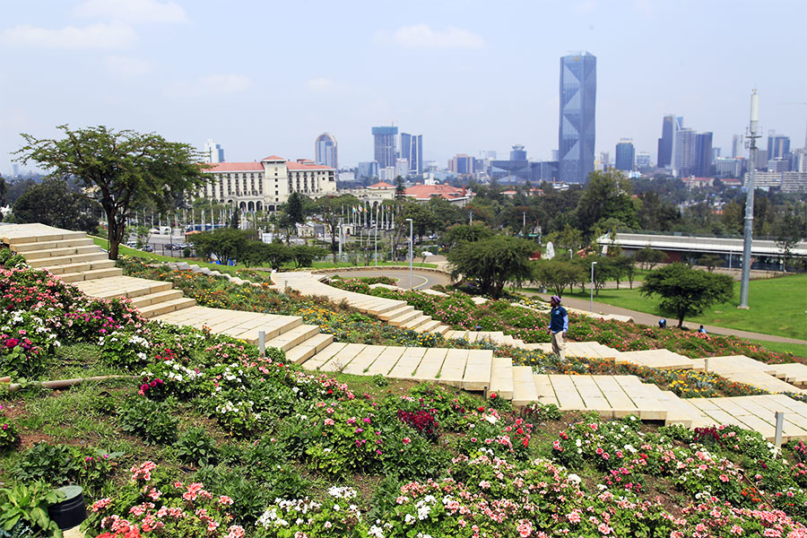
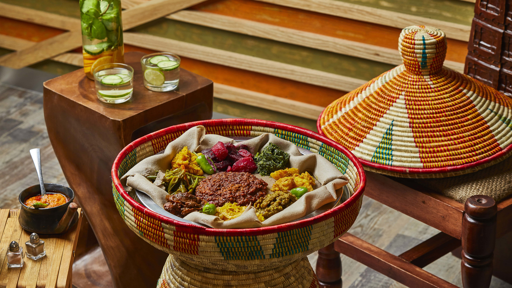

Welcome to Addis Ababa: The Beautiful Capital of Ethiopia

Perched at an altitude of more than 7,700 feet, Addis Ababa offers a refreshing, cool climate that makes it a unique destination. Despite Ethiopia's status as a developing country, the city stands as a stable hub compared to many other urban areas across the continent. Although the pace might not match what some are used to, this city of 3.5 million people is far from the chaotic image some may hold.
Addis Ababa is a vibrant melting pot of cultures. The streets pulse with the sound of various languages and the blending of traditions. Bustling markets full of artisans sit side by side with contemporary art galleries. In this city, history and progress intermingle, with each corner revealing a story. Known as the "New Flower," Addis welcomes visitors with warmth and hospitality, where the past meets the future in perfect harmony.
Addis Ababa also bousts a vibrant culinary scene. The city offers a vibrant mix of traditional Ethiopian cuisine, with injera—a spongy, sour flatbread made from teff flour—taking center stage. It is typically served with a variety of stews known as wot, made from lentils, chickpeas, vegetables, and spiced meats. Renowned celebrity chef Marcus Samuelsson once stated, In Ethiopia, food is often looked at through a strong spiritual lens, stronger than anywhere else I know. It's the focal point of weddings, births and funerals and is a daily ceremony from the preparation of the meal and the washing of hands to the sharing of meals.
Addis Ababa is also home to many contemporary restaurants that blend Ethiopian flavors with international influences, offering everything from Italian pasta (a nod to the country's historical ties with Italy) to Indian, Middle Eastern, and even fusion dishes. Coffee, a national pride, is an integral part of the city's culinary experience, with coffee ceremonies being a must-try for visitors. Whether in street-side cafes or upscale restaurants, Addis Ababa’s food scene is a feast for the senses, full of bold flavors, rich spices, and a communal spirit.